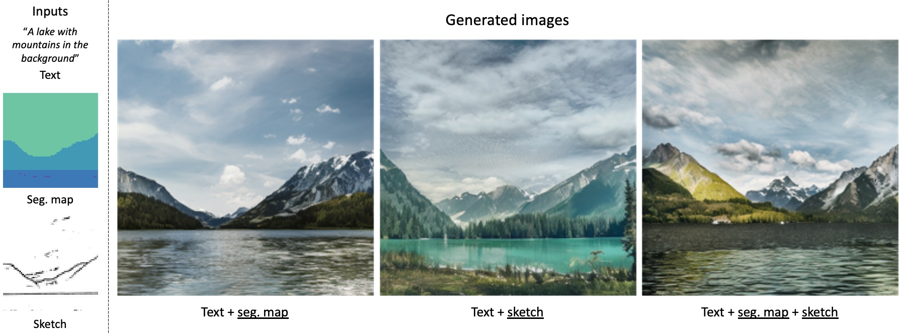
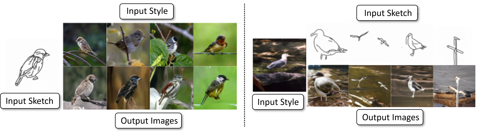
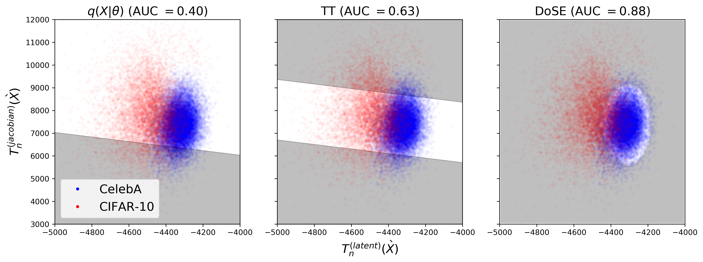
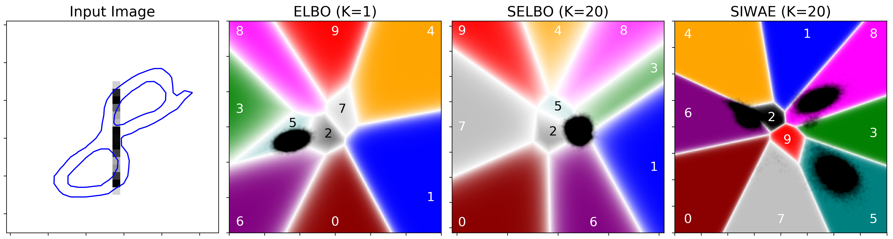
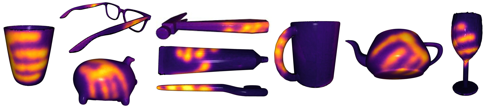
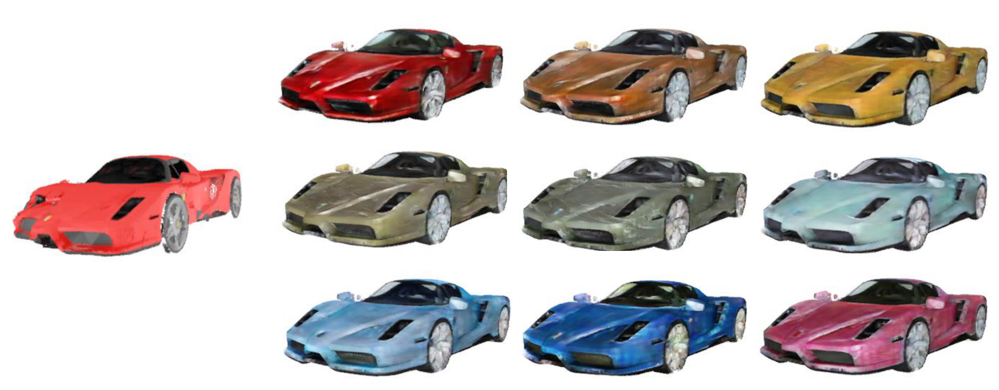
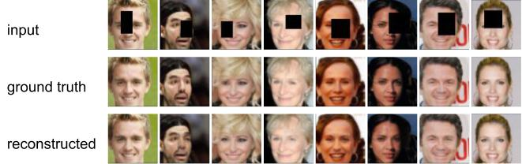
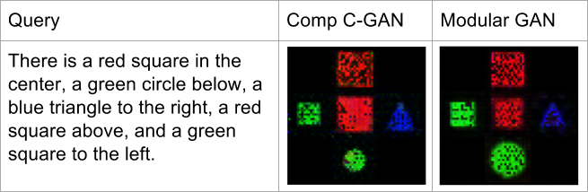
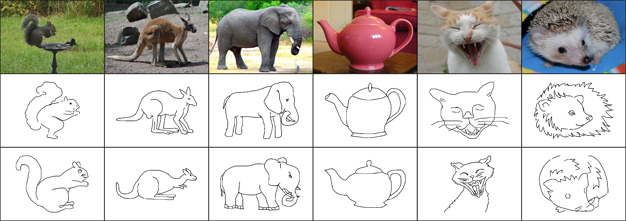

I'm a Machine Learning PhD student advised by James Hays at the Georgia Institute of Technology, where I received my BS and MS degrees in Computer Science. My research interest primarily lies in the intersection of computer vision and machine learning. In particular, I'm interested in leveraging generative models for uncertainty estimation and controllable image synthesis.
Previously, I was a research intern at Adobe (1x under John Collomosse and Zhe Lin and 2x under Tobias Hinz), research intern & student researcher at Google (1x under Aaron Sarna and 1x under Andrew Gallagher), and a visiting student at the Max Planck Institute for Intelligent Systems under Andreas Geiger. I was awarded the Marshall D. Williamson Fellowship during my Master's.








